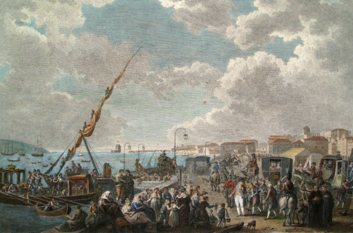

Viagem para o Brasil
A situação era muito delicada. Fosse qual fosse a decisão portuguesa, Portugal entrava num conflito militar, contra a sua vontade.
Sabendo que corria o risco de ser destituído, D. João VI, o príncipe regente de Portugal, deveria tomar uma decisão difícil. Durante semanas ele ficou conversando com a França, tentando adiar ao máximo uma invasão. Ao mesmo tempo, mostrava fortes sinais aos ingleses de que seriam apoiados.
Em 27 de outubro de 1807, o Tratado de Fontainebleu estipulava a invasão franco-espanhola de Portugal. Agora D. João estava entre duas escolhas: lutar contra o exército francês ou fugir para o Brasil.
O monarca português, temendo o poderoso exército francês, optou pela segunda opção. A vinda da família real para o Brasil já era um plano antigo de Portugal, mas o tempo para executá-lo era curto demais. O governo português realizou a transferência das instituições que administravam o país, portanto, tratava-se de uma missão muito grande para tão poucos dias. Nessa transferência, todas as pessoas que possuíssem algum papel no governo mudaram-se para o Rio de Janeiro com suas famílias.
Todos os preparativos da mudança foram realizados às pressas, e, por isso, houve correria e pânico. Muita coisa que deveria ter embarcado foi deixada para trás, e os navios, abarrotados de gente (cerca de 13 mil pessoas embarcaram), não tinham suprimentos suficientes para todos.
As embarcações portuguesas iniciaram a viagem para o Brasil no dia 29 de novembro de 1807, sendo escoltadas por navios ingleses. No fim do dia 29, as tropas francesas entraram em Lisboa e eram formadas por cerca de seis mil soldados. Nos seus últimos anos de vida, Napoleão escreveu as suas memórias. Nunca se esqueceu de D. João VI: “Foi o único me enganou”.
De acordo com os historiadores, caso D. João tivesse permanecido em Portugal, apesar dos fracos recursos militares e econômicos que o país dispunha na época, os franceses teriam perdido facilmente e muitos dos acontecimentos poderiam ter sido evitados.
Os problemas na viagem foram muitos. A superlotação fez com que alimentos e água fossem racionados; não havia dormitórios e camas para todos, e os problemas de higiene era muitos. Estes resultaram em um surto de piolhos que forçou as mulheres rasparem seus cabelos.
A viagem durou 54 dias até Salvador (BA), onde desembarcaram no dia 22 de janeiro de 1808. Na capital baiana foram recebidos com festas e ali permaneceram por mais de um mês.
Além da família real foram também embarcados nos navios coisas como Móveis,documentos,obras de arte etc.
A chegada no Rio de Janeiro ocorreu em 7 de março de 1808. Havia poucos alojamentos disponíveis para acomodar a comitiva palaciana e muitas residências foram solicitadas para recebê-los.Quartéis e conventos também foram usados para acomodar a corte.